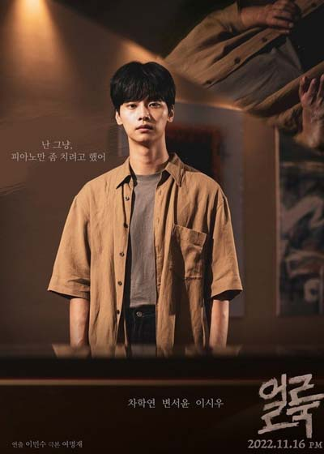

Пятно
Дорама "Пятно" (Eolluk) 2022 рассказывает историю юного музыканта, который мечтает обучаться за границей и стать великим пианистом. Главный герой Хан Гён-у был отличником в музыкальной школе и учился игре на пианино уже много лет. Однако, его жизнь круто меняется после странной встречи с загадочной девушкой Чжун Ён.